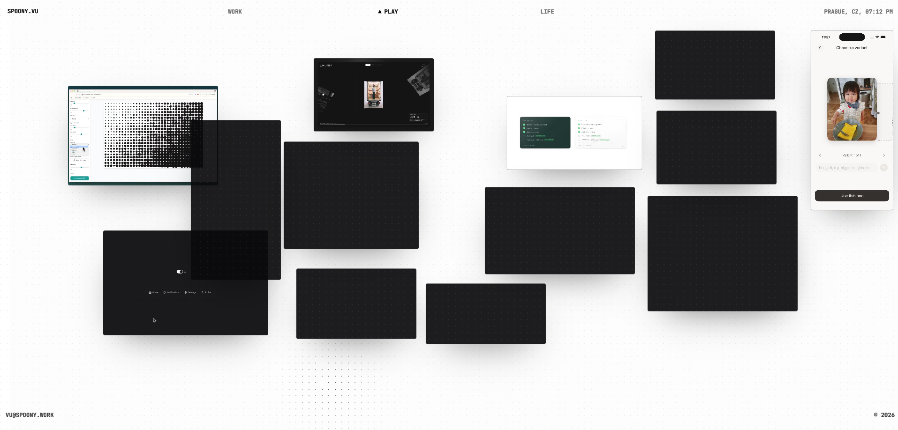

Spoony Vu
- Портфолио
- Личные сайты и портфолио
- Дизайнер
- Дизайнерам
- Агентствам
- Минимализм
- Редакционный
- Светлая тема
- Нейтральный фон
- Микроанимации
- Кастомный курсор
- Переходы между страницами
- Next.js
- React
- Vercel
- Английский язык
- Чехия
- Действующий сайт

Что это
Портфолио Ву Минь Хиеу — продуктового и бренд-дизайнера из Праги. Главная показывает работу как поле свободно разложенных карточек-проектов, а разделы Work, Play и Life дают три разных взгляда: кейсы, эксперименты и заметки. Всё построено на спокойной типографике, точных отступах и мягких микроанимациях. Лаконичное информативное портфолио продуктового и бренд-дизайнера Ву Минь Хиеу. Невероятное количество внимания к деталям, микроанимациям, скорости и плавности. Очень приятная работа.
Что смотреть в первую очередь
Смотреть поле карточек на главной и раздел Play: лёгкие микроанимации, точная типографика и плавные переходы.
Приёмы
- Микроанимации
- Кастомный курсор
- Переходы между страницами
Интересные факты
- Верхняя строка почти пустая: SPOONY.VU слева, WORK / ▲ PLAY / LIFE по центру и «PRAGUE, CZ, — 07:12 PM» справа.
- Проекты разложены как свободное поле карточек: скриншоты интерфейсов, тёмные и светлые плоскости, рядом — макет телефона.
- В работе девять проектов: Avast, Rossum, Wrike, Anchovi, Marinade, OWNIT, MatMat, Attena и Breakout — от веба и AI до крипты и еды.
- В разделе About — короткий рассказ от первого лица: бренд, продукт и системы, которые их связывают; услуги Brand Identity, Product Design, Website Design, AI Development, Art Direction.
- Внизу — почта vu@spoony.work, соцсети, подпись © 2026 и тот же адрес; локация — Прага.
- Собрано на Next.js; изображения отдаются из Vercel Blob.
Паспорт
- Домен
- spoony.work
- Тип сайта
- Портфолио
- Категории
- Личные сайты и портфолио
- Подкатегории
- Дизайнер
- Для кого
- Дизайнерам, Агентствам
- Стиль
- Минимализм, Редакционный
- Язык
- Английский
- Страна
- Чехия, Прага
- Автор
- Ву Минь Хиеу
- Год
- 2026
- Добавлен в коллекцию
- 18.11.2026
Палитра
-
#FAFAFA— 63% кадра -
#1B1B1D— 30% кадра -
#D3D3D3— 4% кадра -
#414646— 1% кадра -
#6B6F6D— 1% кадра
- Режим
- Светлая
- Цвет фона
- Нейтральный
Технологии
- Next.js
- React
- Vercel Blob